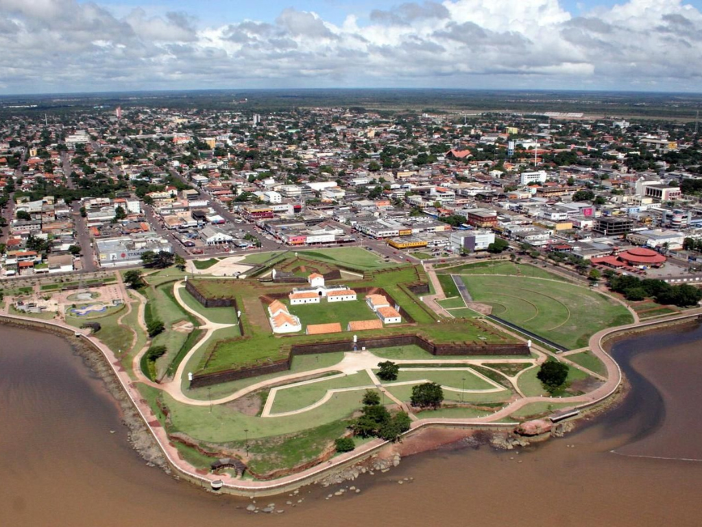

O Amapá é um estado localizado no extremo norte do Brasil, conhecido por sua grande riqueza ambiental e cultural. Cortado pela Linha do Equador, o estado abriga extensas áreas de floresta amazônica preservada, além de rios e reservas naturais de enorme importância ecológica. Sua capital, Macapá, é famosa pelo monumento do Marco Zero, que simboliza a divisão entre os hemisférios Norte e Sul. O Amapá possui forte influência das culturas indígena, africana e ribeirinha, refletida em suas festas, culinária e tradições populares. A economia local é baseada no extrativismo, na mineração, na pesca e no comércio, sempre com grande destaque para a preservação ambiental e o desenvolvimento sustentável.
